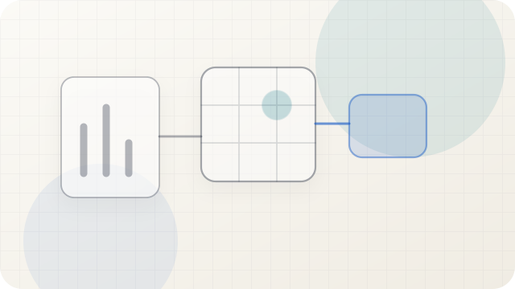

Home
Tools, research, and field notes Updated Jul 24, 2026Overview
Tools and research,essays and field notes.
I keep the most useful recent projects, essays, and notes here. Newer work stays up front; older pieces stay findable by topic.
Current Index
01
Personal Information Systems in the AI Era
A talk about capture, memory, agents, projects, and boundaries.
Watch or read
 02
Hermes Agent HV Analysis
Evidence, questions, and limits placed together in a public analysis.
Read analysis
02
Hermes Agent HV Analysis
Evidence, questions, and limits placed together in a public analysis.
Read analysis
 04
My Haba Snow Mountain Journey
Outdoor experience, body data, risk, and lessons from outside the screen.
Field notes
04
My Haba Snow Mountain Journey
Outdoor experience, body data, risk, and lessons from outside the screen.
Field notes

02
Hermes Agent HV Analysis
Evidence, questions, and limits placed together in a public analysis.
Read analysis

03 Ten Years of Sleep Records, Analyzed A visual essay built from 3,656 nights of SleepCycle records, tracing sleep, body, and life across a decade. Read essay
04
My Haba Snow Mountain Journey
Outdoor experience, body data, risk, and lessons from outside the screen.
Field notes
Reading paths
Recent updates
- Personal Information Systems in the AI Era AI 时代的个人信息系统
- Sleep Toolkit
- Ten Years of Sleep Records 十年睡眠记录：视觉随笔
- My Personal Knowledge Management System, 2026-03 我的个人知识管理系统 2026-03
- Across Three Abysses: Sonnet, Qwen, and GPT-5.4 跨过三个深渊：Sonnet、Qwen 与 GPT-5.4
- Emerging from the Abyss: An OpenClaw Agent's Self-Narration 从深渊中浮现：一个 OpenClaw Agent 的自述
- My Haba Snow Mountain Journey 我的哈巴雪山之旅